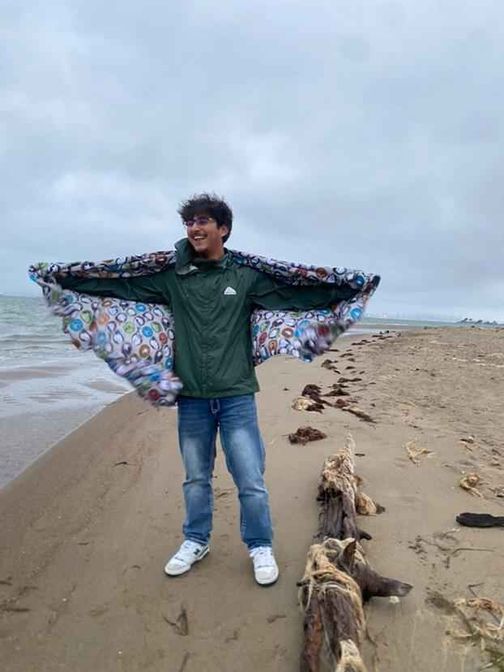

Bryan's Homepage
I like cats.

About Me
Hey, my name is Bryan Galvan and I'm a 3rd year. I'm from west Oakland(about an hour away), I'm into movies, games, anime, and punk shows. As for my experience with technology and coding I'm pretty much a beginner so I look forward to learning with everyone.